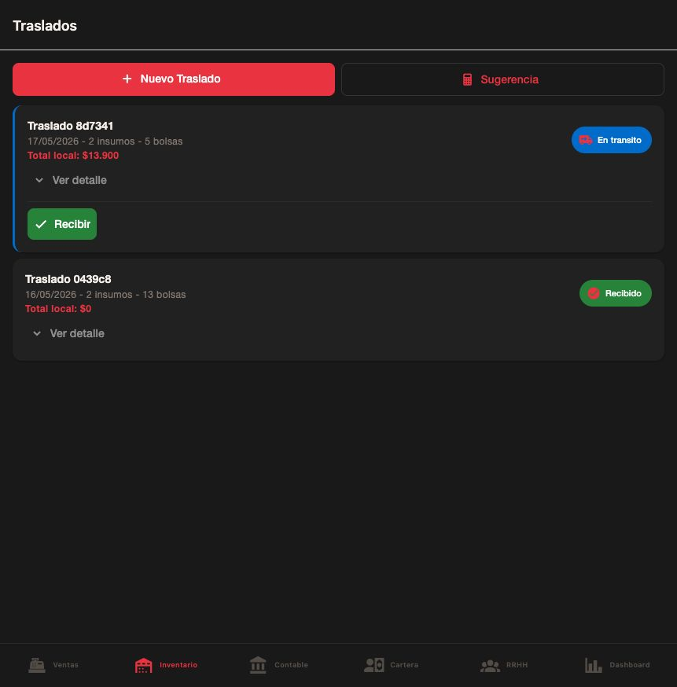
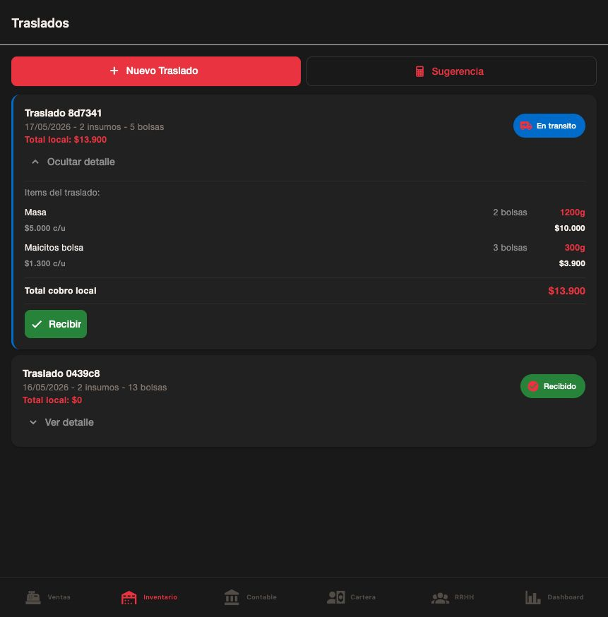
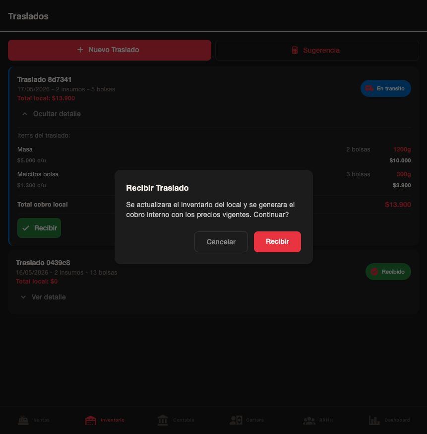
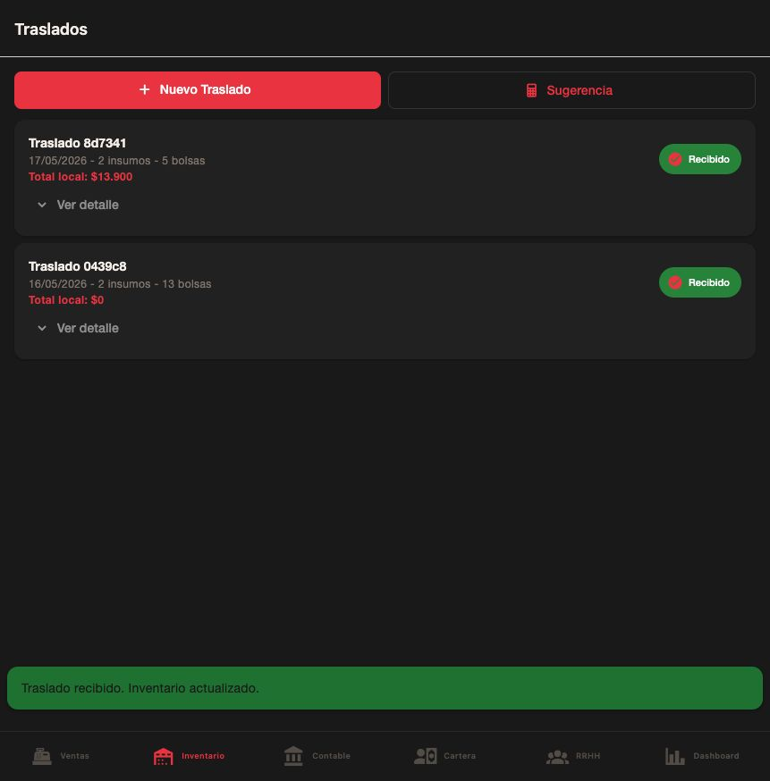
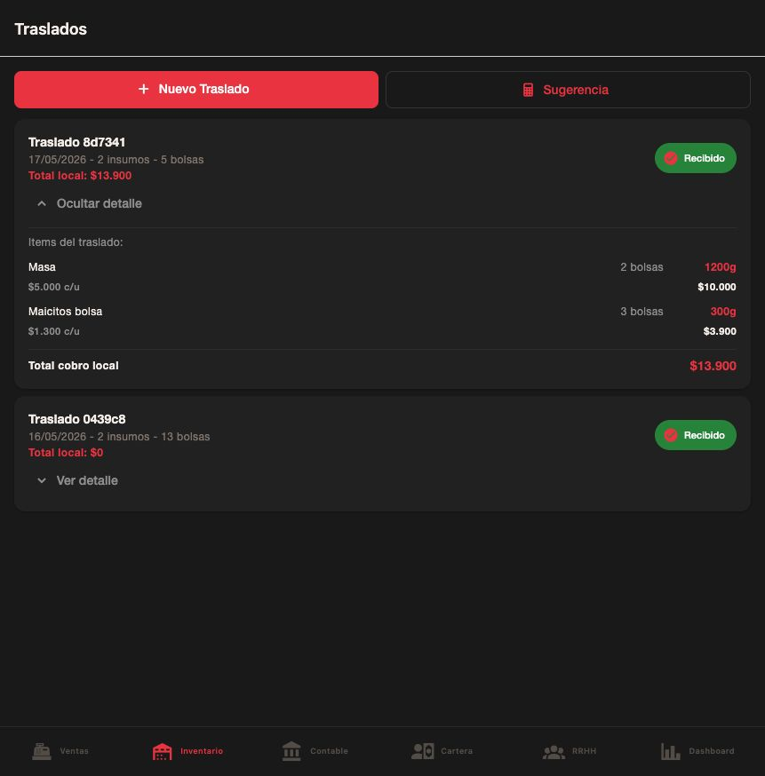
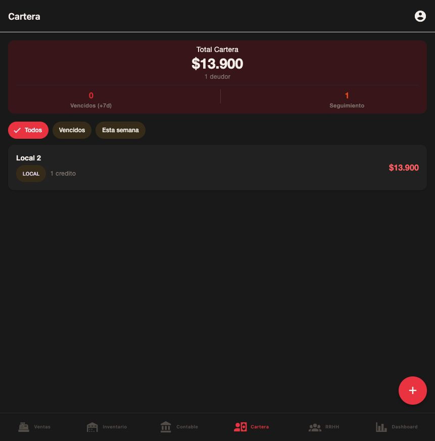
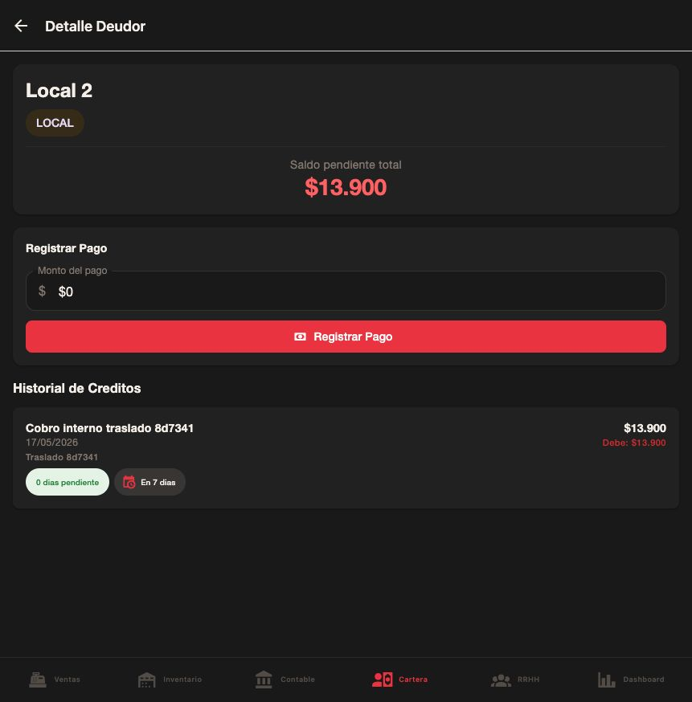
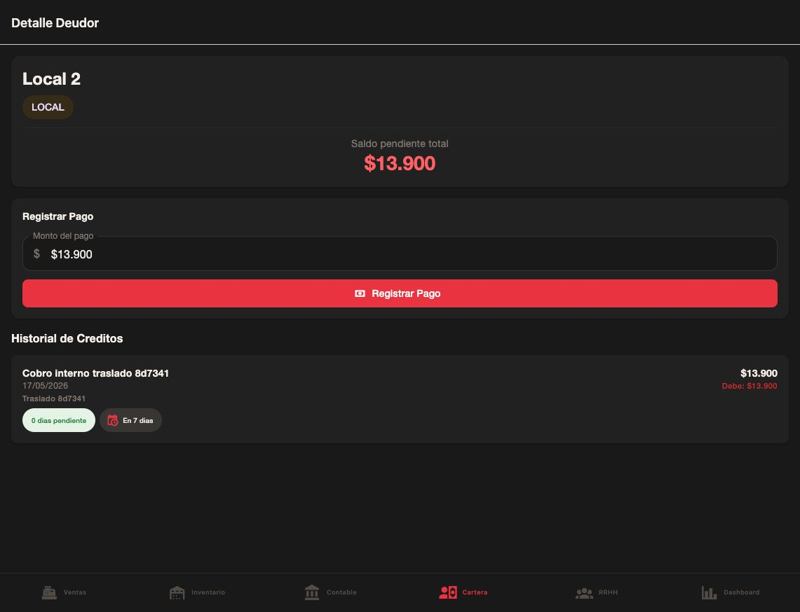
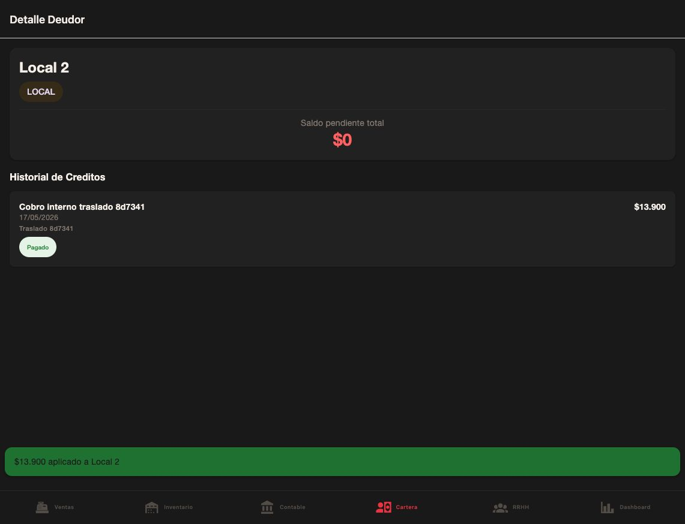
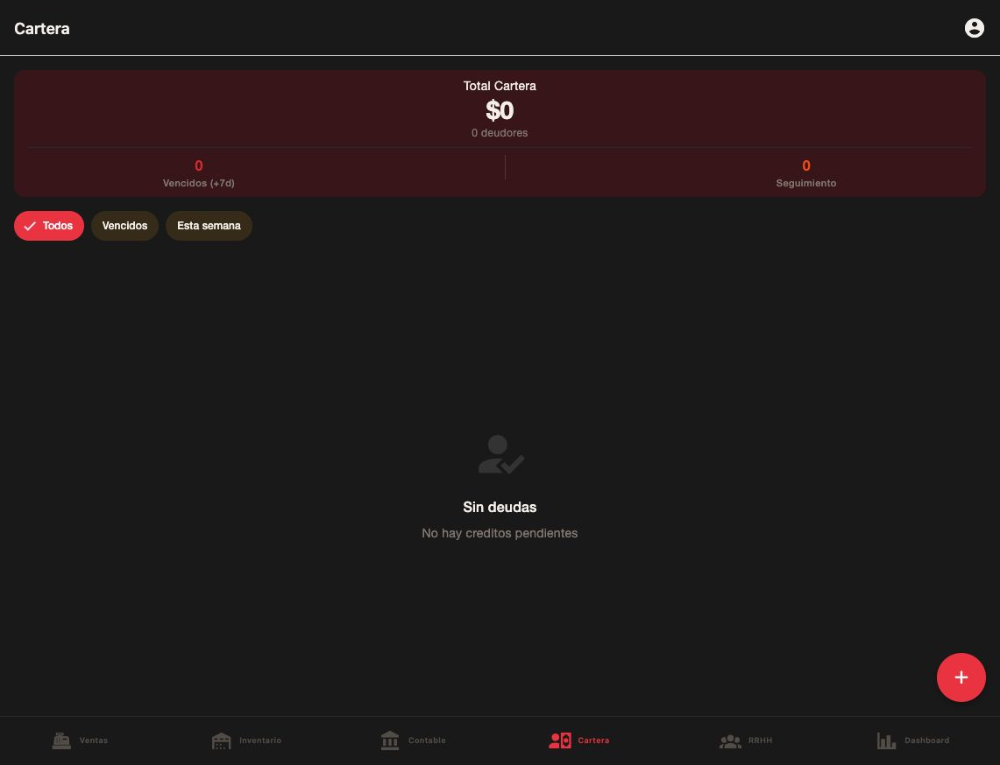

Traslado
8d7341
Validacion completa
Este reporte documenta una prueba end-to-end del modelo de franquicia: Centro de Produccion despacha bolsas a Local 2, la recepcion congela precios vigentes y crea una cuenta por cobrar LOCAL. Los costos de produccion se verifican solo como snapshot interno y no aparecen en las vistas operativas.
| Insumo | Bolsas | Gramos por bolsa | Precio local | Subtotal local |
|---|---|---|---|---|
| Masa | 2 | 600g | $5.000 | $10.000 |
| Maicitos bolsa | 3 | 100g | $1.300 | $3.900 |
| Total cobrado al local | $13.900 | |||
| Chequeo | Resultado | Dato observado |
|---|---|---|
| Traslado recibido | OK | status = RECEIVED |
| Snapshot comercial del traslado | OK | total_price_cop = 13900 |
| Snapshot interno de costo | OK | total_cost_cop = 4692.60, solo para administracion/reportes internos |
| Cuenta por cobrar LOCAL | OK | amount = 13900, balance = 13900, is_paid = false |
| Vinculos historicos | OK | credit_entries.transfer_id = transfers.id y transfers.credit_entry_id = credit_entries.id |
Archivo de respaldo de la verificacion: verification.json. La UI de traslados y cartera
muestra precio unitario, subtotal y total comercial; no expone costos de produccion.
| Chequeo | Resultado | Dato observado |
|---|---|---|
| Pago registrado desde la app | OK | $13.900 aplicado a Local 2 |
| Saldo de la cuenta | OK | balance = 0 |
| Estado de cartera | OK | is_paid = true y paid_date = 2026-05-17 |
| Monto historico preservado | OK | amount = 13900, conservando el total originalmente facturado |
Archivo de respaldo del pago: payment-verification.json. Despues del pago,
el resumen de cartera vuelve a Total Cartera = $0 y muestra Sin deudas.









